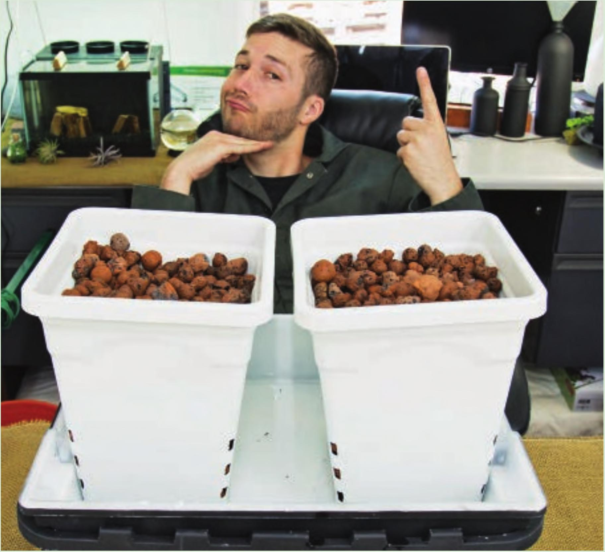
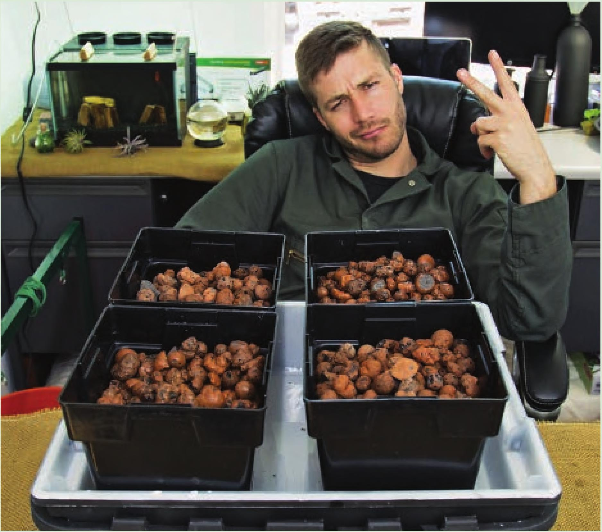
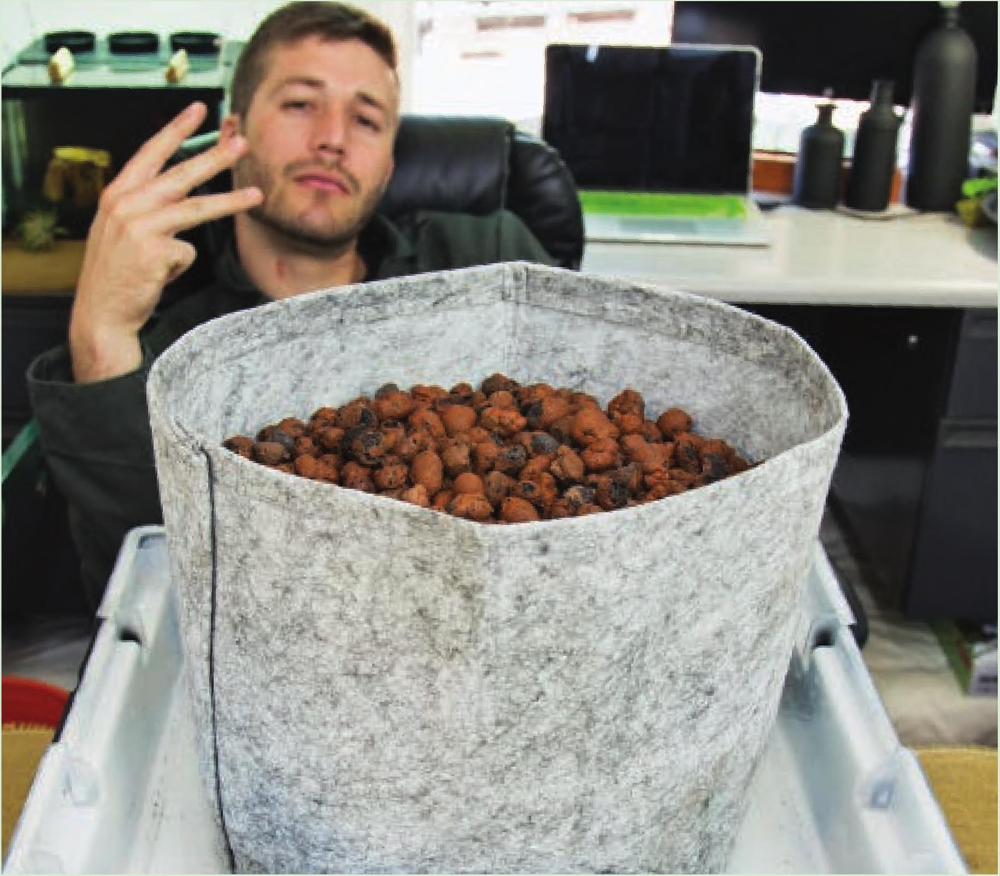
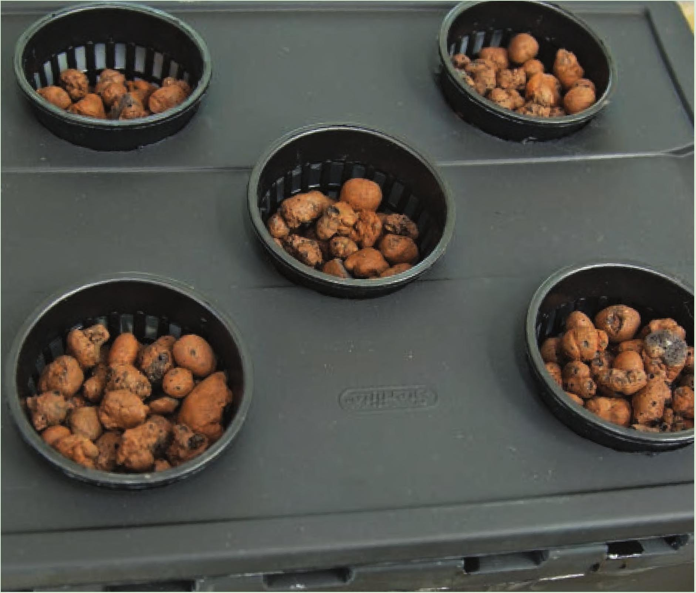

Planting Options Option 2 This garden can fit four 5" square pots. These are a great fit for this flood tray. Option 1 This garden can fit two 6" square pots. These pots are a little tall for this flood tray. The height of the drain should be about one-third of the height of the pots in the tray. It may be possible to use taller pots, or it may be necessary to water the plants from the top for the first few weeks until the roots reach the bottom of the pot. Option 3 This garden can fit one 2-gallon fabric pot. Fabric pots are great for holding loose substrates like coco, peat, and perlite. Option 4 This garden can fit five 3" net pots. Drill five 2 W holes in the lid of the flood tray to fit the net pots. This setup is great for herbs and leafy greens. The lid will reduce the potential for algae development in the flood tray. This garden can grow microgreens too. HYDROPONIC GROWING SYSTEMS 105



